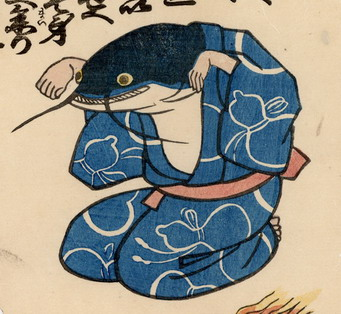

← 图鉴索引

瓢箪柄の浴衣を着た鯰。両手を握って顔の前へ垂らし、狐拳の狐のポーズをとっている。
出典：親書誌：U426_nichibunken_0219：地震けん；ジシンケン／日付：2010／資源識別子：U426_nichibunken_0219_0001_0000
Copyright (c)2010- International Research Center for Japanese Studies, Kyoto, Japan. All rights reserved.